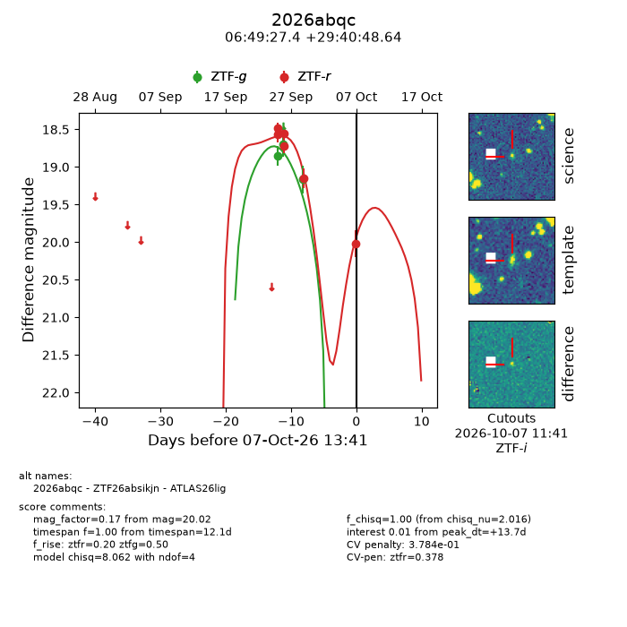
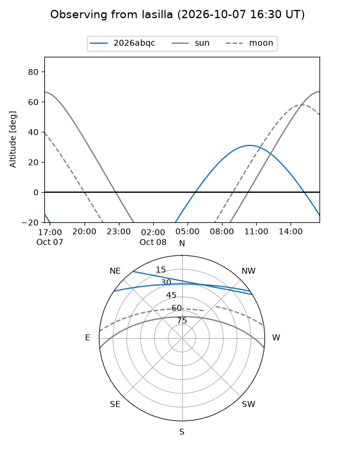
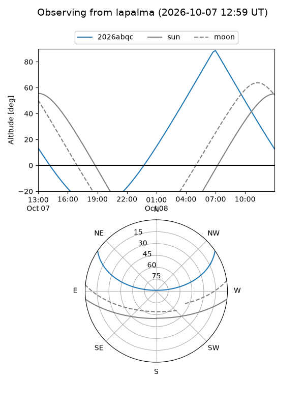
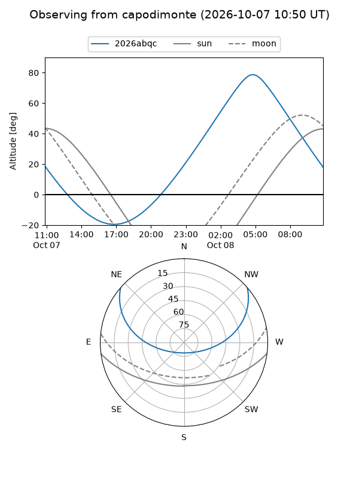
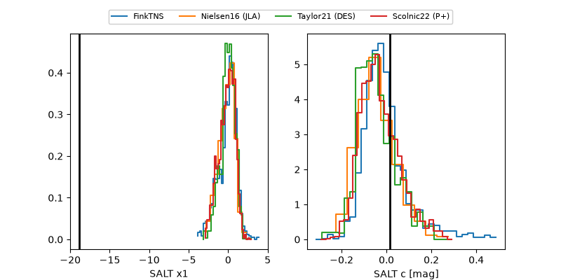

2026abqc
Target 2026abqc at 2026-10-07 13:43
Aliases and brokers:
FINK-ZTF: ztf.fink-portal.org/ZTF26absikjn
Lasair-ZTF: lasair-ztf.lsst.ac.uk/objects/ZTF26absikjn
ALeRCE-ZTF: alerce.online/object/ZTF26absikjn
YSE-PZ: ziggy.ucolick.org/yse/transient_detail/2026abqc
TNS name: wis-tns.org/object/2026abqc
Direct TNS query: direct search
alt names
ZTF26absikjn (ztf,fink_ztf)
2026abqc (tns,yse)
ATLAS26lig (atlas)
Coordinates:
equatorial (ra, dec) = 102.3642,+29.68018
equatorial (HMS+DMS) = 06:49:27.41,+29:40:48.64
galactic (l, b) = (185.8561,+12.65620)
Flags:
TNS type: nan
peak dt: +13.7
likely cv: !!
Photometry:
last ztfg=19.16, ztfr=20.02
3 ztfg, 6 ztfr detections
Lightcurve

Visibility



Additional plots
